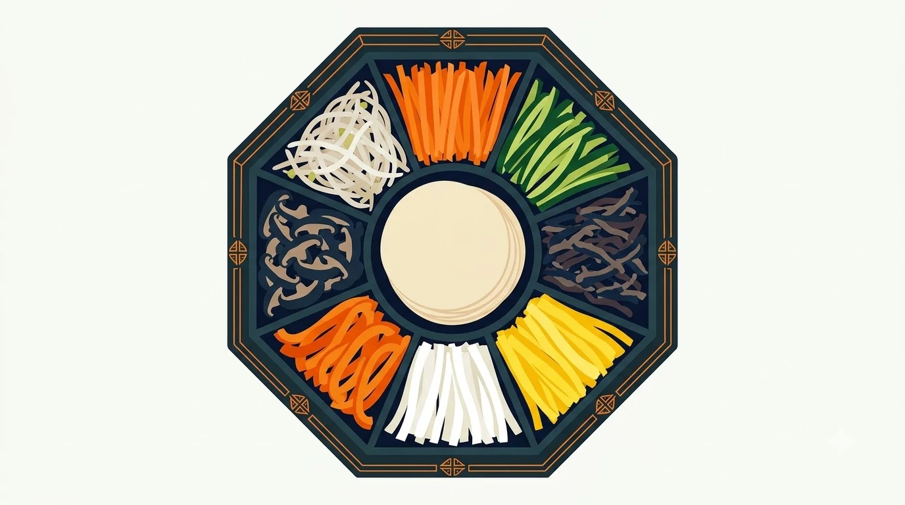
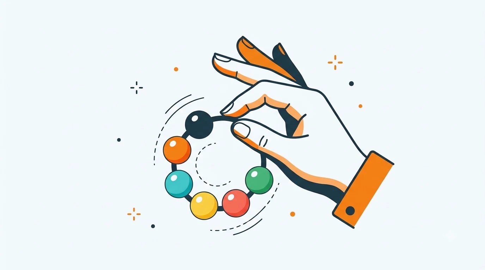

2주차
circular permutation
확률과 통계 · 공과대학 1학년
교과서: 미래엔 「확률과 통계」 Ⅰ-1 순열과 조합 p.11~12
질문: 모두 옆자리로 옮겨 앉은 뒤의 배치는 처음과 다른 배치인가?
01
원탁 회의 비유
02
한 사람 고정하기
03
끈으로 묶기, 탁자 모양 비교
04
뒤집기 비유 (심화)
원순열(circular permutation)
서로 다른 대상을 원형으로 배열하는 순열
회전해서 겹치는 배열은 같은 것으로 간주
비유: 원탁 회의
모두 한 칸씩 옮겨 앉아도 양옆 사람은 그대로
누가 누구 옆에 앉았는지가 핵심
일렬 순열과의 차이: 맨 앞·맨 뒤 자리 없음


공통점: 맨 앞·맨 뒤 없이 둥글게 놓인 배열
차이점: 팔찌는 뒤집을 수 있음 → 오늘 마지막 심화 주제
일렬 배열 ABCD, BCDA, CDAB, DABC
맨 앞 사람을 맨 뒤로 보내는 회전 관계
원탁에 앉히면 모두 같은 배치
원순열 1가지 ↔ 일렬 배열 n가지 대응
원순열의 수 = n! ÷ n
4명: 4! ÷ 4 = 24 ÷ 4 = 6
한 사람(A)의 자리를 기준으로 고정
회전으로 겹치는 경우가 저절로 사라짐
나머지 (n − 1)명의 일렬 배치와 같음
원순열의 수 = n! ÷ n = (n − 1)!
예: 4명 → 3! = 6
예: 5명 → 4! = 24
예제 1
서로 다른 7명이 원탁에 둘러앉는 경우의 수
한 명 고정 → 나머지 6명 일렬 배치
(7 − 1)! = 6! = 720
예제 2
6명이 원탁에 앉을 때 A와 B가 마주 보고 앉는 경우의 수
A 고정 → B는 맞은편 1자리로 결정
나머지 4명: 4! = 24
조건: 특정 두 사람 A, B가 반드시 이웃
비유: 두 사람을 끈으로 묶어 한 사람처럼 취급
① 묶음 1개 + 나머지 4명 = 5개의 원순열
(5 − 1)! = 24
② 묶음 안 순서: AB, BA
2! = 2
24 × 2 = 48
정n각형 탁자, 각 변에 1명씩
한 칸씩 돌리면 모양 일치 → 원탁과 같음
정팔각형 8명: (8 − 1)! = 7!
정사각형 탁자, 각 변에 2명씩 (8명)
한 칸 이동: 변의 왼쪽 끝 ↔ 오른쪽 끝, 다른 배치
두 칸 이동(90° 회전): 같은 배치
원순열 7! × 2 = 10080
팔찌, 목걸이: 뒤집어도 같은 물건
시계 방향 배열 = 반시계 방향 배열
원순열 2개 → 팔찌 1개 대응
팔찌 순열의 수 = (n − 1)! ÷ 2
n ≥ 3일 때 성립
예: 서로 다른 구슬 5개 → 24 ÷ 2 = 12
링(ring) 네트워크
컴퓨터를 원형으로 연결하는 통신 구조
노드 배치 순서의 경우의 수 = 원순열
신호 방향을 구분하지 않으면 팔찌 순열
노드 6개: 5! ÷ 2 = 60가지
같은 원리: 원형 회전 테이블 공정, 터빈 블레이드 배치
원순열
(n − 1)!
이웃 조건
묶음 원순열 × 묶음 안 순서
팔찌·목걸이
(n − 1)! ÷ 2
핵심 원리
중복해서 센 만큼 나누기
회전으로 같아지는 것 n개 → ÷ n, 뒤집어서 같아지는 것 2개 → ÷ 2
막히면 한 사람 고정 후 일렬 순열로 바꿔 생각
1. 회장과 부회장을 포함한 7명이 원탁에 둘러앉을 때
⑴ 7명이 앉는 경우의 수 ⑵ 회장과 부회장이 이웃하게 앉는 경우의 수
2. 정육각형 모양의 탁자 각 변에 1명씩 6명이 둘러앉는 경우의 수
3. 정삼각형 모양의 탁자 각 변에 2명씩 6명이 둘러앉는 경우의 수
4. 남학생 3명, 여학생 3명이 원탁에 번갈아 앉는 경우의 수
남학생 먼저 원형 배치 후 사이 자리에 여학생 배치
5. (심화) 서로 다른 색 구슬 6개로 만들 수 있는 팔찌의 수